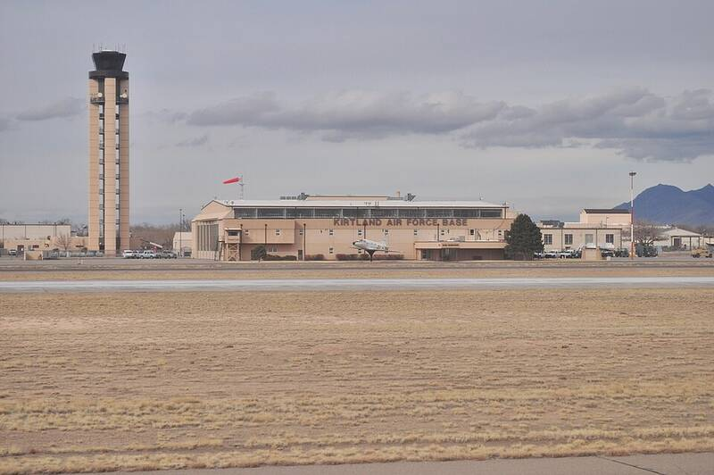

Kirtland AFB
New Mexico

Air Force Research Lab and nuclear weapons center. Site of the 1980 Bennewitz affair, in which Air Force agent Richard Doty fed UFO disinformation to a local businessman. 1,2,3
Open in the interactive Watcher
Related
- Aliens and humans share an underground base at Dulce Claim
- Air Force agents fed false UFO stories to researchers Claim
- Richard Doty Person
- Paul Bennewitz Person
- Mark Pilkington Person
- Greg Bishop Person
- William Neil McCasland Person
Sources
- Kirtland Air Force Base Wikipedia
- Paul Bennewitz Wikipedia
- Richard Doty Wikipedia